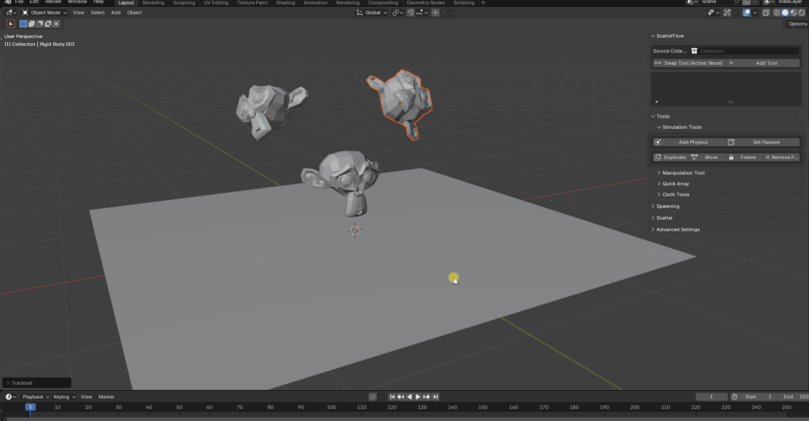

Installation
-
1
Download
ScatterFlow.zip. -
2
In Blender 4.4, open Edit ▸ Preferences ▸ Extensions and click Install from Disk.
Add ScatterFlow assets to the Asset Library
- 1Go to Edit ▸ Preferences ▸ File Paths ▸ Asset Libraries.
- 2Click + to add a new library.
- 3Select the folder with
ScatterFlow Assets.blend. - 4Click Save Preferences.
Quick Start
Drop objects

- 1Go to Tools ▸ Simulation Tools.
- 2Select the floor (or any collision surface) and click Set Passive.
- 3Select your objects and click Add Physics.
- 4Press Space to play the simulation.
Spawning objects

- 1Click Add Tool to add the spawning sphere.
- 2Select a Source Collection.
- 3Go to Spawning ▸ Quick Spawn.
- 4Click Spawn Instances.
- 5Make sure a passive floor/collider exists.
Array Spawning

- 1Add Tool → Swap Tool to the Array tool.
- 2Select a Source Collection.
- 3Go to Spawning ▸ Array Spawning.
- 4Click Spawn Instances.
- 5Ensure a passive floor/collider exists.
Manipulate Objects

- 1Add Tool → Swap Tool to Manipulation Tool.
- 2Go to Tools ▸ Manipulation Tool.
- 3Press Pickup or U to pick up / drop objects.
- 4To move/throw: press G to move the tool, then Left-click quickly followed by U.
- 5Note: due to a Blender limitation, you can’t move and throw simultaneously. Stop moving with Left-click first.
Features
Spawning
Quick Spawn

- Count — objects per click.
- Scale Min/Max — size range.
- ∞ Spawn — continuous spawn during playback; Rate — objects/sec.
- Random Rotation — randomize orientation (off uses applied rotation).
- Randomize Selected — delete spawned set and generate from selection only.
- Randomize All — delete spawned set and generate a new set.
Surface Scatter

- Target Mesh — surface(s) to spawn on.
- Count — number of objects scattered.
- Random Rot — randomized orientation.
- Skip Rigid Bodies — spawn without physics.
- Randomize Selected — re-roll using selection only.
- Randomize All — re-roll full set.
Array Spawn

- Count X/Y/Z — rows/columns/layers.
- Gap X/Y/Z — spacing between objects.
- Scale Min/Max — size variation.
Tools
Manipulation Tool (Force-Field)

- Dynamic Pickup — toggles field strength for grabbing/releasing.
- Drag — quick set to
-500for dragging. - Strength — attraction force.
- Tip: press U to switch pickup/drop.
Simulation Tools


- Add Physics — add physics to selected objects.
- Set Passive — make selected objects static colliders.
- Duplicate — duplicate the selection.
- Move — enable moving (pause first).
- Freeze — convert active bodies to passive to “lock” them.
- Remove Physics — remove physics from selected objects.
Quick Array Grid

- Count X/Y/Z — rows/columns/layers.
- Gap X/Y/Z — spacing between objects.
- Note: Quick-array objects don’t include physics. Select and press “Add Physics”.
Cloth Tools

- Add Cloth — add cloth simulation to selected objects.
- Add Collisions — create cloth colliders.
- Remove Collisions — remove cloth colliders.
- Apply Cloth — apply the cloth simulation.
Advanced
Advanced Settings

- Split Impulse — reduces physics velocity applied to objects (Off = more explosive; On = less).
- Friction/Bounce — adjust friction and restitution.
- Collision Shape — Convex Hull (faster, less accurate) vs Mesh (slower, more accurate).
- Set as Default — save current parameters for new spawns.
- Origin Tools — set origin to center or base.
Common Issues
- Objects fall through mesh — set floor to Passive and choose an appropriate Collision Shape (BOX for simple, MESH for complex). Thin/small objects may still pass at high speeds.
- Exploding objects — if Split Impulse is enabled, try toggling it. Avoid intersections; increase spacing.
- Viewport performance — optimize meshes, reduce polycount, scatter in batches, then Freeze.
- Cloth clips through mesh — on the collider, enable “Single-Sided.”
- Won’t fall into container — for hollow objects, set Collision Shape to Mesh.
- Cloth self-clipping — enable “Self Collisions.”
- Scattered objects keep resetting — changes after frame 1 reset the sim; make changes before playback or Freeze first.
.gif)